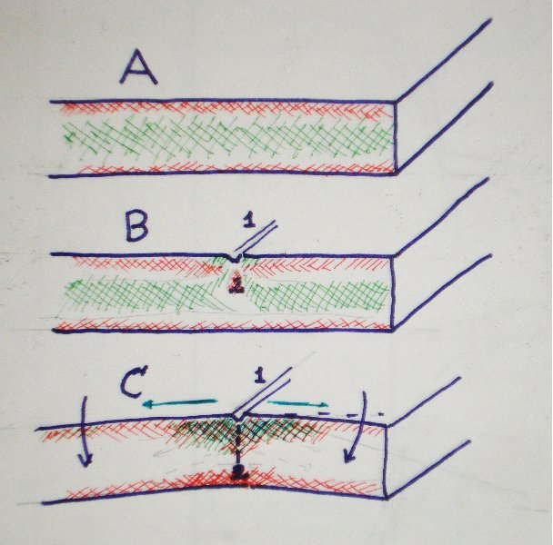

When a sheet glass is produced, the core cools a bit later than the surface. The thermal contraction of the core imposes a compressive stress along the surfaces.
Cutting glass is a two phased process
1. First you draw a score on one side of the panel.
The slight pressure of the cutter is concentrated to an extremely small area
and locally scushes the glass under the wheel.
It also forms a temporary stress area under the score.
This temporary stress is relieved with time.
It is much reduced in next half an hour.
If the score is not opened soon enough,
the stress reduction may form micro fissures that may run the opening astray.
The cutting liquid resist the formation of micro fisssures.
2. When the glass is bent away if the score, the line opens under the score. Tapping has a similar effect. You can tap a score straight, if you use something for chisel to position the hit exactly opposite the score. Normal tapping is never accurate and the score weers off.
 Cutting ProcessThe A. picture shows the natural stresses ina pristine sheet.
The picture B shows how the the compression on top surface is interrupted by the score. The temporary pressure area is formed under the score, excerting a tension sideways. This helps the opening of the score.
In picture C. the bending (black arrows) introduces more tension on the upper surface. (green arrows) and preassure on the lower surface. When the score begins to open, the preassure point moves downwards. The SiO2 network breaks strand by strans. Imagine opening a zipper.
.